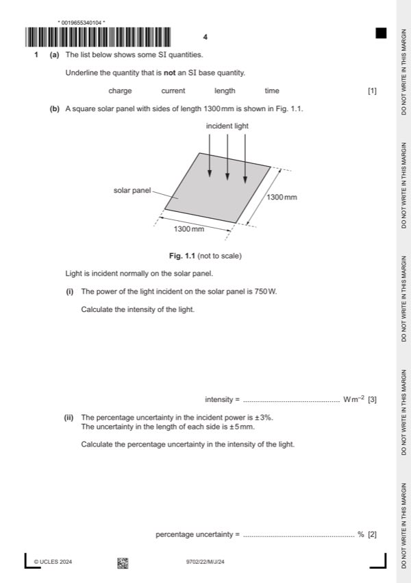

Question 1

Original paper page 4
Part 1(a) — solution
- [B1] Obtain/use: charge underlined (and no others)
Mark points
- [B1] Obtain/use: charge underlined (and no others)
Part 1(b)(i) — solution
- [A1] Obtain/use: = 440 W m–2
Mark points
- [A1] Obtain/use: = 440 W m–2
Part 1(b)(ii) — solution
- [A1] Obtain/use: = 3 + 2 0.38
Mark points
- [A1] Obtain/use: = 3 + 2 0.38
Part 1(b)(iii) — solution
- [A1] Obtain/use: efficiency = useful output power / total input power
Mark points
- [A1] Obtain/use: efficiency = useful output power / total input power
Part 1(b)(iv) — solution
- [B1] Obtain/use: area (of the new panel) is less
- [B1] Obtain/use: input power (of the new panel) is less (than the input power of the original panel) (as intensity is constant)
- [B1] Obtain/use: (useful power output is unchanged so) efficiency is greater (than the original panel)
Mark points
- [B1] Obtain/use: area (of the new panel) is less
- [B1] Obtain/use: input power (of the new panel) is less (than the input power of the original panel) (as intensity is constant)
- [B1] Obtain/use: (useful power output is unchanged so) efficiency is greater (than the original panel)